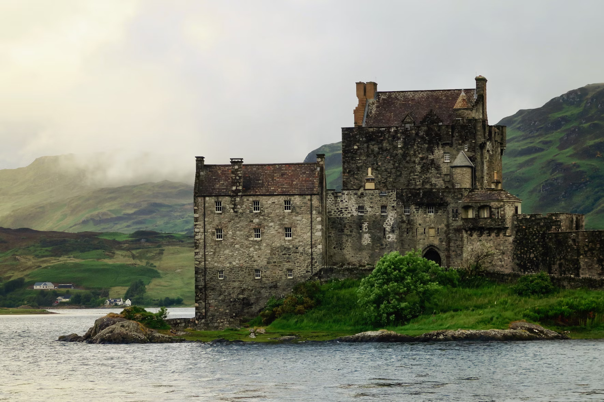

Welcome to Adventure
Lochquarry Outdoor Centre provides outdoor activities for young people aged 6-18. We have recently expanded the number of different activities that we offer and would like to invite your groups to experience all the exciting activities that young people can take part in!
At the moment, the centre is busy during evenings and weekends with bookings from youth groups, such as Scouts and Guides, but the centre is proud to announce expanded availability to include bookings from school groups during the week.

Land Based Activities
Visitors can take part in a wide range of land-based activities on and off site.

Hillwalking
From short walks around the site to Munro-bagging expeditions, Lochquarry has it all! Walks can be tailored to suit any age or experience.
👉 Click to view details

Archery
Are you the next Robin Hood? Learn to hold a bow and fire an arrow and take part in fast and fun shootout competitions.
👉 Click to view details

Orienteering
Set in the centre's grounds, find all the markers and make it back in time to show off your superior navigation knowledge.
👉 Click to view details

Axe Throwing
Take yourself back to a time of Vikings and have a go at throwing an axe. Try to hit the target, or better yet throw yourself a bullseye.
👉 Click to view details
Learn more about walking in Scotland via the Walkhighlands Resource Website.
Water Based Activities
Water-based activities all take place on Lochquarry itself.

Kayaking
Have a go at paddling, rolling and rafting in one of our brand new kayaks under expert tuition.
👉 Click to view details

Canoeing
Work single-handedly or in pairs to canoe the length of Lochquarry. You can even take a picnic with you and explore islands.
👉 Click to view details

Powerboating
Take control of one of the Centre's two RIBs out on Lochquarry and try your hand at dynamic powerboating thrills.
👉 Click to view details
Read about water safety instructions at the RNLI Official Water Safety Portal.
Rope Based Activities
All rope-based activities take place on site with full safety equipment provided.

Climbing
Scale the highs of one of our local quarry slabs with premium hardware and fully guided ropes.
👉 Click to view details

Abseiling
Take the scary step and abseil from the top of one of the local quarry slabs. There is a lovely view if you are brave enough to look!
👉 Click to view details

Pole Climb
Ever wondered how telephone engineers get to the top of the telephone poles? Well, here's your chance to find out firsthand.
👉 Click to view details
Check climbing guidelines at Mountaineering Scotland.
Our Centre & Team
Set in acres of land in the heart of the majestic Argyll hills.
The Lochquarry Legacy
On our doorstep is not only magnificent scenery, but also a breath-taking selection of outdoor and adventurous activities. With activities designed to meet the needs of all ages and experiences of young people, Lochquarry truly brings adventure to everyone.
Each activity is run under the instruction of one of our highly trained staff and all safety equipment is strictly provided.
Ready to Book Your Adventure?
Our activities are very popular with youth groups including Scouts and Guides. To secure weekday slots for school groups or weekends for clubs, contact our head administrator.

Meet the Lochquarry Team

Claire Jack
Responsible for: The overall running of the centre and all of its activities.
❤️ Favourite Activity: Pole climb

Robbie Elliot
Responsible for: Overseeing all of the land based activities on and off site.
❤️ Favourite Activity: Hillwalking in the beautiful Scottish highlands

Marion Hunter
Responsible for: Making bookings and arranging activity slots for groups.
❤️ Favourite Activity: Making sure everyone has a great time
Plan your trip through the official VisitScotland Tourism Guide.